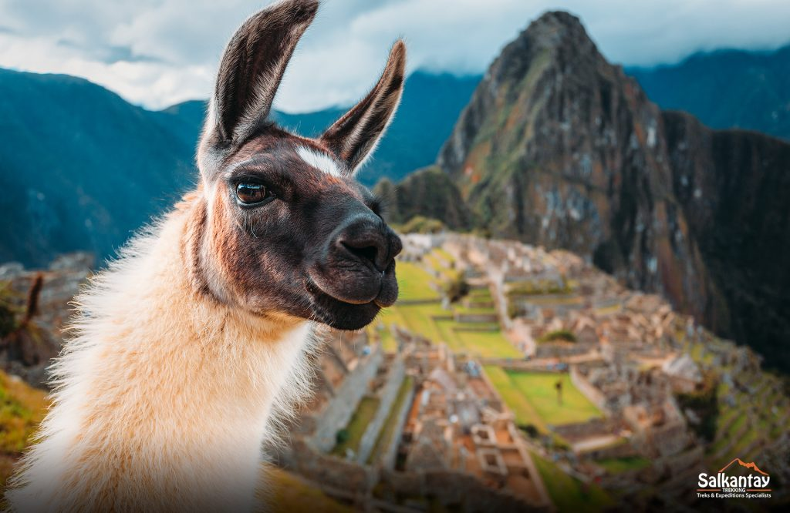

Bienvenidos a Cusco
Explora los lugares más impresionantes de Cusco, cada uno con su propia historia, actividades únicas, gastronomía típica y consejos prácticos para aprovechar al máximo tu visita.
Ollantaytambo

Descubre Ollantaytambo aquí.
Montaña de Colores

Descubre Montaña de Colores aquí.
Laguna Humantay

Descubre Laguna Humantay aquí.
Pisac

Descubre Pisac aquí.
Machu Picchu
Descubre Machu Picchu aquí.
Tour y actividades

Descubre Ollantaytambo aquí.
Consejos praacticos
Descubre Ollantaytambo aquí.